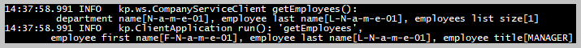

The flowchart with the SpringBoot server application and the SpringBoot client application.
The flowchart with the SpringBoot server application and the SpringBoot client application.
The screenshot of the sequence diagram.
Creating the SOAP Web Services:
The limitations of the Spring Web Services: XSD-based generation is only supported for WSDL version 1.1 and Spring-WS only supports the contract-first development style.
The sections of this project:
Java source code. Packages in modules 'soap-ws-server', 'soap-ws-client':

 module 'soap-ws-server' application sources:
kp
module 'soap-ws-server' application sources:
kp
module 'soap-ws-server' test sources:
kp.ws
module 'soap-ws-client' application sources:
kp
module 'soap-ws-client' test sources:
kp.ws
The Java classes are generated from the XML schema file
company.xsd.
The Java classes for request and response are generated from the XML schema file company.xsd:

 Java API Documentation ●
Java Test API Documentation
Java API Documentation ●
Java Test API Documentation
Action:

 1. With batch file
"
01 MVN clean install run (server).bat" build and run the server application.
1. With batch file
"
01 MVN clean install run (server).bat" build and run the server application.
 1.1. The server application tests:
1.1. The server application tests:
1.2. The WSDL file (screenshot) link
'http://localhost:8080/ws/company.wsdl'.
Action:
1. With batch file
"
02 MVN clean install run (client).bat" build and run the client application.
2.1. The client application tests are with MockWebServiceServer in
CompanyServiceClientIntegrationTests.
2.2. The service client:
kp.ws.CompanyServiceClient.
The server endpoint: kp.ws.CompanyEndpoint.
The server repository: kp.repository.CompanyRepository. The sample dataset is stored in the 'CompanyRepository'. It is the single 'Company' object filled with departments and employees.
2.3. Web service 'get company'.
The service client method:
kp.ws.CompanyServiceClient::getCompany.
Client console log for 'get company'.
The handler method of the server endpoint:
kp.ws.CompanyEndpoint::getCompany.
The server repository method:
kp.repository.CompanyRepository::findCompany.
Server console log for 'get company'.
2.4. Web service 'get departments'.
The service client method:
kp.ws.CompanyServiceClient::getDepartments.
Client console log for 'get departments'.
The handler method of the server endpoint:
kp.ws.CompanyEndpoint::getDepartments.
The server repository method:
kp.repository.CompanyRepository::findDepartments.
Server console log for 'get departments'.
2.5. Web service 'get employees'.
The service client method:
kp.ws.CompanyServiceClient::getEmployees.

Client console log for 'get employees'.
The handler method of the server endpoint:
kp.ws.CompanyEndpoint::getEmployees.
The server repository method:
kp.repository.CompanyRepository::findEmployees.
Server console log for 'get employees'.
Action:
3. With batch file
"
03 CURL call server.bat" execute the requests to the server.
3.1. Web service 'get company' with
company.xml request.
The response to the company.xml request.
3.2. Web service 'get departments' with
departments.xml request.
The response to the departments.xml request.
3.3. Web service 'get employees' with
employees.xml request.
The response to the employees.xml request.
{kind=link}
{kind=link}